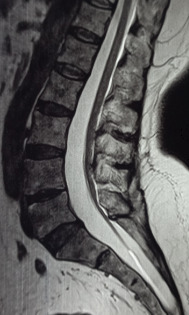

1) Description of Measurement
Conus level refers to the lowermost tip of the spinal cord (normally around L1/L2), while filum thickness describes the fibrous strand (filum terminale) extending from it. A thickened filum (>2mm) or a low conus level (below L2/L3) often signals Tethered Cord Syndrome (TCS). It is a clinical neurological disorder caused by abnormal tissue attachments that restrict normal movement of the spinal cord within the spinal canal. This pathological fixation results in chronic traction on the spinal cord, leading to ischemia, metabolic dysfunction, and progressive neurological deterioration. While classically associated with a low-lying conus medullaris or a thickened filum terminale, tethered cord syndrome can occur even when the conus is in a normal position, particularly in adults.
2) Instructions to Measure
3) Normal vs. Pathologic Ranges
4) Important References
Hertzler DA 2nd, DePowell JJ, Stevenson CB, Mangano FT. Tethered cord syndrome: a review of the literature from embryology to adult presentation. Neurosurg Focus. 2010 Jul;29(1):E1. doi: 10.3171/2010.3.FOCUS1079. PMID: 20593997.
Agarwalla PK, Dunn IF, Scott RM, Smith ER. Tethered cord syndrome. Neurosurg Clin N Am. 2007 Jul;18(3):531-47. doi: 10.1016/j.nec.2007.04.001. PMID: 17678753.
Weisbrod LJ, Thorell W. Tethered Cord Syndrome (TCS) [Updated 2023 Jul 31]. In: StatPearls [Internet]. Treasure Island (FL): StatPearls Publishing; 2025 Jan-. Available from: https://www.ncbi.nlm.nih.gov/books/NBK585121/
Klekamp J. Tethered cord syndrome in adults. J Neurosurg Spine. 2011 Sep;15(3):258-70. doi: 10.3171/2011.4.SPINE10504. Epub 2011 May 20. PMID: 21599446.
5) Other info....
A meaningful subset of adult TCS can have conus at/above L2–3 and/or a filum <2 mm, so imaging alone can miss clinically tethered patients. The diagnosis should be driven by symptoms plus supportive imaging features, not measurements in isolation.